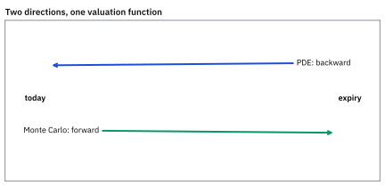
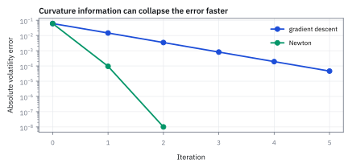
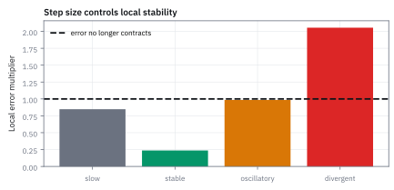

12.7 Algorithms in Practice — Gradient Descent and Newton's Method
เลือกก้าวลงเขาให้เร็วโดยไม่หลุดทาง
call บนกระดานราคา \$10.45 หุ้น 100 strike 100 อายุ 1 ปี ดอกเบี้ย 2% ต้องหาความผันผวนที่ทำให้สูตรราคาให้ 10.45 พอดี เริ่มเดาที่ 30% gradient descent กับ Newton ต้องเดินกี่ก้าว?
เฉลย: คำตอบคือ 23.92% ต่อปี gradient descent ที่ขนาดก้าว 0.0005 ต้องเดินราว 9 ก้าวจึงแม่น 6 หลัก เพราะแต่ละก้าวตัด error เหลือ 23.7% Newton ใช้ 2 ก้าว เพราะมันเลือกขนาดก้าวจากความโค้งเอง และถ้าเลือกขนาดก้าวใหญ่กว่า 0.00131 gradient descent จะระเบิดจนความผันผวนติดลบ
gradient descent ใช้ทิศลงจาก gradient ส่วน Newton's method ใช้ Hessian เพิ่มข้อมูลความโค้งเพื่อเลือกก้าวและลด objective
Newton ใช้แผนที่ท้องถิ่น จึงต้องมี line search, damping และหลายจุดเริ่มเพื่อลดการหลงทาง
เริ่มด้วยโจทย์ที่ไม่ต้องรู้เรื่อง option
อยากหา $x>0$ ที่ทำให้ $x^2=4$ คำตอบคือ 2 แต่ลองแกล้งไม่รู้แล้วเริ่มที่ $x_0=3$ เราใช้โจทย์นี้ดูว่าแต่ละ algorithm เลือกก้าวอย่างไร จากนั้นค่อยใช้หลักเดียวกันกับตัวอย่างราคาสัญญา ซึ่งสูตรราคาจะพิสูจน์ในบทที่ 14
ศัพท์ที่ใช้ในหัวข้อนี้
- implied volatility
- ค่าความผันผวนที่ทำให้ option-pricing model ให้ราคาตรงกับราคาตลาด ใช้แปลงราคา option เป็นหน่วยความผันผวนที่เปรียบเทียบกันได้
- gradient descent
- วิธีอัปเดตตัวแปรสวนทาง gradient ด้วย step size ที่กำหนด ใช้ลด objective ทีละรอบเมื่อปัญหามีหลายตัวแปร
- Newton's method
- วิธีใช้ derivative และ curvature เพื่อคำนวณก้าวใหม่ ใช้หารากหรือ optimize ได้เร็วเมื่อเริ่มใกล้คำตอบ
- learning rate
- ขนาดตัวคูณของก้าวใน gradient descent ใช้ควบคุมความเร็วและการเข้าใกล้คำตอบ (convergence) อย่างเสถียร
- vega
- derivative ของ option price เทียบ volatility decimal ใช้แปลง price error เป็น volatility correction
- line search
- ขั้นตอนทดลองลดขนาดก้าวจน objective ดีขึ้น ใช้ป้องกันการกระโดดแรงเกินบนพื้นผิวที่ curvature เปลี่ยน
- root finding
- งานหาค่าตัวแปรที่ทำให้ function เท่าศูนย์ ใช้หา implied parameter จากราคาตลาด
- underlying
- สินทรัพย์ที่ option อ้างอิงและรับผลจากราคา ใช้เป็นตัวตั้งต้นของ payoff กับ model price
- strike
- ราคาที่ option contract กำหนดให้ซื้อหรือขายได้ ใช้กำหนด moneyness และ payoff
- expiry
- วันสิ้นสุดสิทธิ์ของ option ใช้คำนวณเวลาคงเหลือและ discounting ในราคา
- moneyness
- ตำแหน่งของ spot เทียบ strike ใช้บอกว่า option อยู่ใกล้หรือไกลจากการมี intrinsic value
- no-arbitrage
- เงื่อนไขราคาที่ไม่เปิดกำไรไร้ความเสี่ยงจากการซื้อขายพร้อมกัน ใช้ตรวจ quote ก่อนหา implied volatility
- arbitrage
- ชุดธุรกรรมที่ไม่ใช้เงินสุทธิแต่รับกำไรแน่นอนภายใต้สมมติฐาน ใช้ระบุราคาที่ขัดกันใน model
- bid price
- ราคาสูงสุดที่ผู้ซื้อพร้อมจ่าย ใช้เป็นขอบล่างของ executable option quote
- ask price
- ราคาต่ำสุดที่ผู้ขายพร้อมรับ ใช้เป็นขอบบนของ executable option quote
สัญลักษณ์ที่ใช้ในหัวข้อนี้
| สัญลักษณ์ | ความหมาย | หน่วย |
|---|---|---|
| $S,K$ | underlying price และ strike ของ call | USD per share |
| $T$ | เวลาถึง expiry | years |
| $r$ | continuously compounded risk-free rate | decimal ต่อปี |
| $\sigma$ | annual volatility ที่กำลังหา | decimal ต่อรากปี |
| $C(\sigma),C_{mkt}$ | model call price และ market call price | USD per share |
| $\eta$ | learning rate | volatility² หารด้วย USD² ใน objective นี้ |
| $k$ | iteration index | count |
ลองสองก้าวด้วยกำลังสองธรรมดา
กำหนด $g(x)=x^2-4$ และ $f(x)=g(x)^2/2$ หา derivative ด้วย chain rule ได้ $g^{\prime}(x)=2x$ และ $f^{\prime}(x)=g(x)g^{\prime}(x)$
Gradient descent เลือกอัตราก้าว $0.02$ แล้วลบความชันของ loss คูณอัตรานั้น ส่วน Newton หารค่าที่ยังเกินเป้าด้วยความชันของ $g$ จึงเลื่อนประมาณ 0.8333 ตรวจผลได้ $2.4^2-4=1.76$ และ $2.1667^2-4\approx0.6946$ ทั้งสองลดส่วนต่างในก้าวนี้ แต่ไม่มีข้อรับรองว่าก้าวเต็มจะดีสำหรับทุก function
Worked Example — โจทย์และสิ่งที่ให้มา
โจทย์ให้อะไรมาบ้าง: ลองใช้ price function ของสิทธิ์ที่ไม่จ่าย dividend โดยใส่ spot \$100, strike \$100, อายุหนึ่งปี, annual risk-free rate 2% และราคาตลาด \$10.45 ต่อหุ้น ตัวเลขนี้เป็นภาพสมมติสำหรับฝึก algorithm ของจริงยังต้องใส่ dividend, early exercise และผลของ bid–ask ให้ตรงกับสัญญา
ขั้นที่ 1 — ที่มาของ Newton's Step: จาก Taylor Expansion สู่ Quadratic Model
บรรทัดเหล่านี้แสดงสะพานเชื่อมระหว่างการหาจุดต่ำสุดของ loss กำลังสองกับการหารากสมการราคา เมื่อตัดพจน์ derivative อันดับสองที่ไม่สำคัญออก Newton optimization จะยุบตัวลงกลายเป็น Newton-Raphson root finding โดยสมบูรณ์
Newton's method ในการหาจุดต่ำสุดมอง function ใกล้เคียงเป็นชามพาราโบลา โดยตัด Taylor series ไว้ที่กำลังสอง แล้วกระโดดตรงไปยังจุดต่ำสุดของชามจำลองนั้นทันที
เมื่อหา derivative ของแบบจำลองกำลังสองเทียบกับระยะก้าว $p$ แล้วจับเท่ากับศูนย์ เราจะได้สมการที่คูณกลับด้วย inverse ของ Hessian ซึ่งจะชี้ทิศทางและระยะก้าวที่เหมาะสมโดยอัตโนมัติ
เมื่อนำมาใช้กับ loss กำลังสองของการหาราคาออปชัน พจน์ derivative อันดับสองจะมีค่าประมาณ vega กำลังสอง การหาร gradient ด้วยความโค้งจึงตัดทอนเหลือเพียงผลต่างราคาหารด้วย vega ตรงกับสูตรหารากสมการของ Newton พอดี
ขั้นที่ 2 — เปลี่ยน quote เป็น root และ loss
ปัญหา "หาความผันผวนที่ทำให้ราคาตรงกับตลาด" เขียนได้สองแบบ แบบหาค่าที่ทำให้ส่วนต่างเป็นศูนย์ กับแบบหาค่าที่ทำให้ส่วนต่างกำลังสองน้อยที่สุด สองแบบนี้นำไปสู่วิธีเดินคนละวิธี
root formulation หาค่า $\sigma$ ที่ price residual เป็น zero ส่วน optimisation formulation ยก residual เป็น loss ไม่ติดลบและมี minimum ที่จุดเดียวกัน
ขั้นที่ 3 — ของที่ยกมาจากหัวข้อ 14.2 และ 14.3: สูตรราคาและ vega
สี่ก้อนนี้เป็น ของที่ให้มา จากหัวข้อ 14.2 และ 14.3 ซึ่งพิสูจน์ครบอยู่ที่นั่น หัวข้อนี้ไม่ได้สร้างมันขึ้นใหม่ และวิธี Newton ก็ไม่ได้เป็นที่มาของสูตรราคา ถ้ายังไม่ได้อ่านสองหัวข้อนั้น ให้ใช้ตัวอย่าง $x^{2}=4$ ด้านบนเพื่อเข้าใจ algorithm ก่อน แล้วค่อยกลับมาดูว่ามันทำงานกับสูตรจริงอย่างไร
$\Phi$ และ $\phi$ คือ cumulative distribution และ density ของ standard normal; vega $\mathcal V$ เป็น derivative ของราคาเทียบ annual volatility decimal
ขั้นที่ 4 — คำนวณที่จุดเริ่ม 30%
แทน spot 100, strike 100, อายุ 1 ปี, rate 2% และเดาความผันผวนเริ่มต้นที่ 30% ลงในสูตรของขั้นก่อนหน้า ทีละบรรทัด
$\ln(100/100)=0$ เพราะ spot เท่ากับ strike พอดี เหลือแค่ $0.02+0.045=0.065$ หารด้วย $0.30$
ราคาที่ volatility 30% สูงกว่าราคาตลาด 10.45 อยู่ 2.371581 แปลว่าเราเดาความผันผวนสูงเกินไป ต้องปรับลง
$\Phi(0.216667)=0.585766$ และ $\Phi(-0.083333)=0.466793$ อ่านจากตาราง standard normal หรือ norm.cdf เหมือนหัวข้อ 1.9 ส่วน $e^{-0.02}=0.980199$ คือตัวคูณที่ย้ายเงินหนึ่งปีข้างหน้ามาเป็นค่าวันนี้ (หัวข้อ 18.1 จะอธิบายเต็ม) ทุกตัวเลขในบรรทัดจึงมาจากสองแหล่ง: ตารางระฆังคว่ำ กับเครื่องคิดเลข
ขั้นที่ 5 — หา vega และ gradient
vega คือความไวของราคาต่อความผันผวนและเป็นตัวหารของ Newton ในขั้นถัดไป
$\phi$ คือความสูงของ standard normal ที่จุด $d_1$ ไม่ใช่พื้นที่ใต้กราฟ ดังนั้นจึงไม่ใช่ $\Phi$ ตัวใหญ่
vega 38.9687 อ่านว่า ถ้าความผันผวนขยับขึ้นหนึ่งหน่วยเต็ม ราคาจะขยับราว 38.97 ซึ่งในทางปฏิบัติแปลว่าขยับ 1% ราคาขยับราว 0.39
ขั้นที่ 6 — Gradient descent ก้าวแรก
ก้าวลงตามความชัน โดยคูณด้วย step size ที่เลือกเอง
$\eta=0.0005$ เป็นค่าที่เราเลือกเอง ไม่ได้มาจากสูตร เลือกใหญ่ไปจะกระโดดข้ามคำตอบ เลือกเล็กไปจะเดินช้า ก้าวนี้ขยับลงมาได้ราว 4.6 จุด
ขั้นที่ 7 — Newton correction ก้าวแรก
Newton แบบก้าวเต็มใช้เส้นสัมผัสประมาณ function แล้วไปยังจุดที่เส้นนั้นตัดศูนย์ งานจริงอาจลดก้าวหรือใช้ช่วงคร่อมรากเมื่อก้าวเต็มไม่เหมาะ
ก้าวเดียวของ Newton ขยับลงมา 6.1 จุด ซึ่งไกลกว่า gradient descent และเข้าใกล้คำตอบจริงทันที เพราะตัวหารคือความชันจริง ไม่ใช่ค่าที่เราเดา
ที่มาของเศษหาร: รอบค่า $x$ ประมาณ $g(x+\Delta)\approx g(x)+g^{\prime}(x)\Delta$ ต้องการให้ด้านขวาเป็นศูนย์ จึงได้ $g^{\prime}(x)\Delta=-g(x)$ หารด้วย derivative ที่ไม่เป็นศูนย์ได้ $\Delta=-g(x)/g^{\prime}(x)$ นี่เป็น Newton สำหรับหาราก; Newton สำหรับลด loss โดยตรงจะใช้ $-f^{\prime}/f^{\prime\prime}$ ซึ่งไม่ใช่สูตรเดียวกันเสมอ
gradient descent ครบ 5 รอบ (η = 0.0005)
| k | σₖ | C(σₖ) | ส่วนต่าง | f′(σₖ) | σₖ₊₁ |
|---|---|---|---|---|---|
| 0 | 0.300000 | 12.821581 | +2.371581 | +92.4175 | 0.253791 |
| 1 | 0.253791 | 11.018652 | +0.568652 | +22.2110 | 0.242686 |
| 2 | 0.242686 | 10.584792 | +0.134792 | +5.2670 | 0.240052 |
| 3 | 0.240052 | 10.481886 | +0.031886 | +1.2460 | 0.239429 |
| 4 | 0.239429 | 10.457539 | +0.007539 | +0.2946 | 0.239282 |
| 5 | 0.239282 | 10.451783 | +0.001783 | +0.0697 | 0.239247 |
อ่านแถว k = 1: ใส่ 0.253791 กลับเข้าสูตรราคาได้ 11.018652 ยังแพงไป 0.568652 คูณ vega 39.0591 ได้ความชัน 22.2110 คูณ 0.0005 ได้ก้าว −0.011106 จึงไปที่ 0.242686 vega แทบไม่เปลี่ยนตลอดทาง (38.97 → 39.08) เพราะ option ตัวนี้ strike เท่ากับราคาหุ้น vega จึงแบนรอบยอด ค่า loss f ลดจาก 2.812 เหลือ 0.000002
ขั้นที่ 8 — error หดเหลือ 23.7% ทุกรอบ และทำนายได้ล่วงหน้า
คำตอบจริงคือ σ⋆ = 0.239236 ลบออกจากแต่ละแถวของตาราง แล้วดูอัตราส่วนของ error รอบต่อรอบ
ทุกรอบตัด error เหลือราว 23.7% ตัวเลขนี้ไม่บังเอิญ ใกล้คำตอบ gradient descent หด error ด้วยตัวประกอบ 1 − ηf″ และ f″ ของ loss นี้ประมาณ vega² ตามขั้นที่ 1 ได้ 0.2364 ตรงกับตาราง
แบบนี้เรียกว่า linear convergence ได้ความแม่นเพิ่มคงที่ต่อรอบ ราว 0.63 หลักทศนิยม จะเอาแม่น 6 หลักต้องเดินราว 9 รอบ แม่น 10 หลักราว 16 รอบ
η = 0.0005 ดูเล็กเพราะความชันใหญ่ถึง 92 ขณะที่ระยะที่ต้องเดินมีแค่ 0.06 ขนาดของ η จึงไม่มีความหมายในตัวเอง มันขึ้นกับหน่วยของ function ถ้าเปลี่ยนราคาเป็นเซนต์ η ที่ถูกต้องจะเปลี่ยนไป 10,000 เท่า
ขั้นที่ 9 — Newton คือ gradient descent ที่เลือก η เองจากความโค้ง
วางก้าวของสองวิธีเทียบกัน แล้วหาว่า η เท่าไรทำให้สองก้าวเท่ากัน
η = 1/vega² ให้ก้าวยาว 0.060859 เท่ากับก้าวของ Newton พอดี η ที่เราเดาไว้ 0.0005 เล็กกว่าค่าที่เหมาะ 24% จึงเดินสั้นไปทุกก้าว Newton ก้าวเดียวไปถึง 0.239141 แม่นกว่า gradient descent ที่เดินไป 4 ก้าวเสียอีก
ประโยคที่ควรจำจากทั้งหัวข้อ: Newton คือ gradient descent ที่ให้ความโค้งเป็นคนเลือก learning rate ไม่ต้องเดา ไม่ต้องจูน และปรับใหม่ทุกก้าว
ราคาที่จ่ายคือต้องคำนวณ derivative อันดับสอง ที่นี่คือ vega ตัวเดียว แต่ถ้ามีตัวแปร 500 ตัว Hessian มี 250,000 ช่องและต้องแก้ระบบทุกรอบ นี่คือเหตุผลที่ machine learning ใช้ gradient descent
ขั้นที่ 10 — Newton สามรอบ: หลักที่ถูกเพิ่มเป็นเท่าตัว
วางผลของทุกก้าวไว้ในตารางเดียว จะเห็นทันทีว่าวิธีไหนเข้าเป้าเร็วกว่า และตรวจย้อนทีละบรรทัดได้
เริ่มจาก 30% Newton ขยับไป 23.9141% แล้ว 23.9236% แทนกลับได้ราคา \$10.45 ตรงกับตลาด หลักที่ถูกเพิ่มจาก 1 เป็น 4 เป็น 9 เรียกว่า quadratic convergence เพราะ Newton ประมาณ function ด้วยเส้นสัมผัส error ที่เหลือมาจากพจน์อันดับสองของ Taylor จึงเป็นกำลังสองของ error เดิม
เทียบจำนวนรอบเพื่อแม่น 6 หลัก gradient descent ที่ η = 0.0005 ต้องราว 9 รอบ Newton 2 รอบ พอ Newton เริ่มเกาะได้แล้วมันจบใน 2 ถึง 3 รอบเสมอ นี่คือเหตุผลที่เครื่องคิดราคา option ใช้วิธีนี้หลายล้านครั้งต่อวินาที
ขั้นที่ 11 — learning rate ใหญ่เกินไป: แกว่ง แล้วระเบิด
ใกล้ก้นหุบ error หดด้วย |1 − ηf″| ต้องให้ค่านี้น้อยกว่า 1 จึงได้เพดาน แล้วลองสองค่า เรียกเส้นทางที่ η = 0.0013 ว่า a และที่ η = 0.002 ว่า b ความชันที่ b₁ คือ −188.196 และที่ b₂ คือ 374.407
η = 0.0013 ต่ำกว่าเพดานนิดเดียว กระโดดข้ามคำตอบทุกครั้งและบีบเข้าช้ามาก η = 0.002 เกินเพดาน กระโดดแรงขึ้นทุกรอบ ภายในสามรอบ σ ติดลบ σ√T ติดลบแล้ว d₁ ไร้ความหมาย โปรแกรมพังหรือคืนค่าขยะ
สรุปตาม η: ต่ำกว่า 0.000659 เดินสั้นไป ปลอดภัยแต่ช้า เท่ากับ 0.000659 คือ Newton เร็วที่สุด ระหว่าง 0.000659 กับ 0.00131 ยิงเลยแล้วเด้งกลับแต่ยังลู่เข้า เกิน 0.00131 ระเบิด งานจริงไม่รู้ f″ ล่วงหน้า จึงใช้ line search หรือ learning rate ที่ปรับเองอย่าง Adam ซึ่งก็คือการประมาณ f″ แบบถูก ๆ
ขั้นที่ 12 — Guardrails ก่อนเชื่อคำตอบ
ก่อนเชื่อคำตอบ ต้องเช็กว่าราคาตลาดอยู่ในกรอบที่ไม่มี arbitrage ถ้าหลุดกรอบนี้ implied volatility จะไม่มีคำตอบจริงเลย
ขอบล่างคือมูลค่าที่ได้แน่ ๆ ถ้าใช้สิทธิ์ตอนหมดอายุ ขอบบนคือราคาหุ้นเอง เพราะสิทธิ์ซื้อหุ้นจะแพงกว่าหุ้นไม่ได้ vega เป็นบวกเสมอ ราคาจึงเพิ่มตาม σ ตลอด ตัดเส้น 10.45 ได้ครั้งเดียว loss มีก้นหุบเดียว เริ่มที่ไหนถ้าลู่เข้าก็ได้คำตอบเดียวกัน
ถ้าราคาตลาดต่ำกว่า 1.9801 จะไม่มี σ ใดในโลกที่ให้ราคานั้น โปรแกรมต้องตอบว่าราคาผิด ไม่ใช่วนหาไปเรื่อย ๆ
แล้วเอาไปใช้ทำอะไรได้จริงบ้าง
การเลือกวิธีเดินหาคำตอบ ตัดสินว่าระบบทันรอบการเทรดหรือไม่
ใช้หา implied volatility จากราคาตลาด ซึ่งต้องทำหลายพันครั้งต่อวินาทีบนโต๊ะ option
ใช้ปรับแบบจำลองให้เข้ากับข้อมูล ซึ่งเป็นงานที่ทำซ้ำทุกวันในทุกทีม quant
ใช้ตัดสินว่าจะยอมเขียนโค้ดหา derivative เพิ่มหรือไม่ เพราะวิธีที่ใช้ derivative เดินเร็วกว่ามาก แต่ต้องลงแรงเขียนมากกว่า
Figure 12.7a — เส้นราคากับรากที่เป็น implied volatility

function ตัวอย่าง call price เพิ่มตามความผันผวนและตัดเส้น market price \$10.45 ครั้งเดียวใกล้ 23.92%; ภาพนี้อธิบายว่าทำไม root มีเอกลักษณ์ในสมมติฐานตัวอย่าง
Figure 12.7b — หุบเขาของความคลาดยกกำลังสอง

การยก price residual เป็นกำลังสองเปลี่ยนจุดตัดให้เป็นก้นหุบที่ loss ศูนย์ จุดเริ่ม 30% อยู่ด้านขวาจึงมี gradient บวก
Figure 12.7c — เส้นทางที่ค่อย ๆ เข้าใกล้คำตอบ

Newton method กระโดดใกล้คำตอบในก้าวเดียว ส่วน gradient descent ที่ learning rate 0.0005 เดินสั้นกว่าแต่ลด error สม่ำเสมอ; เร็วกว่าไม่แปลว่าปลอดภัยกว่าเมื่อ vega เล็ก
Figure 12.7d — ผลของขนาดก้าวที่ต่างกัน

ก้าวเล็กเกินไปช้า ก้าวพอดีลู่เข้า และก้าวใหญ่เกินไปแกว่งหรือระเบิด—algorithm ก็เหมือนคนถือกาแฟ เดินเร็วได้แต่ไม่ควรวิ่งลงบันได
คำตอบ — implied volatility อยู่ที่ 23.9236%
คำตอบ: Newton เริ่มจาก volatility 30% กระโดดไป 23.9141% และรอบถัดไปปิดที่ประมาณ 23.9236% ซึ่งให้ option price \$10.4500 ต่อหุ้นตรงกับ quote
ตรวจเองใน 10 วินาที: ก้าวแรกต้องเป็น 0.30 - 2.371581/38.9687 = 0.239141 แล้วแทน 0.239236 กลับใน price function ต้องได้ประมาณ \$10.45 อยู่ใน bounds 1.980133 ถึง 100
gradient descent ที่ η = 0.0005 เดิน 0.300 → 0.2538 → 0.2427 → 0.2401 → 0.2394 → 0.2393 หด error ×0.2366 ทุกรอบ ใช้ราว 9 รอบ Newton ใช้ 2 รอบเพราะมันคือ gradient descent ที่ η = 1/vega² = 0.000659 และถ้า η เกิน 0.00131 ระเบิด
แปลว่าอะไร: นี่คือ algorithm เบื้องหลังทุกหน้าจอที่แสดง implied volatility ราคาเข้าไป 23.92% ออกมาในไมโครวินาที และเพราะทุกโต๊ะซื้อขายความผันผวน ไม่ใช่ราคา ความเร็วกับความเสถียรจึงเป็นเรื่องเป็นตาย Newton เร็วแต่ไม่รับประกันว่าลู่เข้า ระบบจริงใช้ Brent's method ที่ผสม bisection กับ Newton พร้อมล็อก σ ไว้ระหว่าง 0.001 ถึง 5.0 ยอมช้าลงนิดแลกกับการไม่มีวันพัง
โค้ดตรวจ implied volatility ทั้งสองวิธี
import math
from scipy.stats import norm
from scipy.optimize import brentq
def C(s):
d1=(0.02+s*s/2)/s; return 100*norm.cdf(d1)-100*math.exp(-0.02)*norm.cdf(d1-s)
vega=lambda s: 100*norm.pdf((0.02+s*s/2)/s)
root=brentq(lambda s: C(s)-10.45,0.01,3)
assert abs(C(0.30)-12.821581)<1e-6 and abs(vega(0.30)-38.9687)<1e-4 and abs(root-0.2392363)<1e-7
s=0.3; path=[s]
for _ in range(5): s-=0.0005*(C(s)-10.45)*vega(s); path.append(s)
assert abs(path[1]-0.253791)<1e-6 and abs(path[5]-0.239282)<1e-6
assert abs((path[4]-root)/(path[3]-root)-0.2366)<1e-3
s=0.3
for _ in range(2): s-=(C(s)-10.45)/vega(s)
assert abs(s-root)<1e-9
s=0.3
for _ in range(3): s-=0.002*(C(s)-10.45)*vega(s)
assert abs(s+0.257256)<1e-5โค้ดนี้ตรวจราคาและ vega ที่ 30% คำตอบ 0.2392363 เส้นทาง gradient descent ห้ารอบและอัตราหด 0.2366 Newton สองรอบที่ถึงคำตอบแม่นเก้าหลัก และกรณี η = 0.002 ที่ σ ติดลบ −0.257
กับดัก: ปล่อย Newton หารด้วย vega ใกล้ศูนย์
deep in-the-money หรือ out-of-the-money functions อาจมี vega เล็ก ทำให้ correction ใหญ่มากและความผันผวนติดลบ ใช้ bounds, damping และ bracketed fallback เสมอ อีกทั้ง quote stale หรืออยู่นอก arbitrage bounds คือปัญหาข้อมูล ไม่ใช่เหตุให้เพิ่มจำนวน iterations
อย่าเอา η ที่ใช้ได้ในโจทย์หนึ่งไปใช้กับอีกโจทย์ η = 0.0005 มาจาก f″ ≈ 1527 ถ้าดัชนีเปลี่ยนจาก 100 จุดเป็น 1,000 จุด vega โตสิบเท่า f″ โตร้อยเท่า η เดิมเกินเพดานทันที อีกข้อคืออย่าหยุดเมื่อก้าวเล็กกว่า tolerance อย่างเดียว gradient descent ที่ η เล็กเกินไปก้าวสั้นตลอดแม้ยังไกลคำตอบ ให้ตรวจส่วนต่างราคาด้วย เช่น |C(σ) − 10.45| น้อยกว่า 0.0001
ที่มาของ Newton's Method และ Gradient Descent: จากการโคจรของดวงดาวสู่งาน Quant
Isaac Newton ในปี 1669 และ Joseph Raphson ในปี 1690 คิดค้นกระบวนการหารากสมการพีชคณิตที่ไม่มีสูตรสำเร็จ ขณะที่ Augustin-Louis Cauchy เสนอวิธี Gradient Descent ในปี 1847 เพื่อแก้ปัญหาการคำนวณวงโคจรทางดาราศาสตร์ที่ซับซ้อน ทั้งสองวิธีเกิดขึ้นเพื่อแทนที่การลองผิดลองถูกและการแบ่งครึ่งช่วง (bisection) ที่เชื่องช้าเกินกว่าจะนำไปใช้งานจริง
ในโลกการเงินเชิงปริมาณ สูตร Black–Scholes (สร้างในบทที่ 14) ไม่สามารถถอดสมการกลับเพื่อหา implied volatility ออกมาเป็นสูตรปิดทางพีชคณิตได้ตามข้อจำกัดของทฤษฎีทางคณิตศาสตร์ เมื่อระบบเทรดและฝ่ายบริหารความเสี่ยงต้องคำนวณค่านี้ซ้ำนับหมื่นครั้งต่อวินาที วิธีทางตัวเลขอย่าง Newton's method และ Gradient Descent จึงกลายเป็นเครื่องยนต์หลักที่ขับเคลื่อนโต๊ะเทรดออปชันทั่วโลก
ข้อจำกัด: วิธีนี้สมมติอะไร และของจริงเป็นอย่างไร
| เรื่อง | วิธีนี้สมมติว่า | ของจริงเป็นอย่างไร | ผลที่ตามมาเวลาใช้งาน |
|---|---|---|---|
| จุดเริ่มต้น | เริ่มตรงไหนก็ถึงคำตอบ | วิธีที่เร็วอาจพุ่งออกนอกทางถ้าเริ่มไกลเกินไป | ต้องมีค่าเริ่มต้นที่ดีและมีกรอบกันไม่ให้หลุด |
| ความเรียบ | function เรียบและหา derivative ได้ | ราคาตลาดจริงมีขั้นเพราะการปัดทศนิยม | derivative ที่คำนวณจากข้อมูลจริงอาจเป็นศูนย์หรือเพี้ยน ทำให้วิธีพัง |
| คำตอบเดียว | มีคำตอบเดียว | บางโจทย์มีหลายคำตอบหรือไม่มีเลย | ต้องตรวจกรอบไม่มี arbitrage ก่อนเสมอ ไม่งั้นจะหาสิ่งที่ไม่มีอยู่ |
แถวล่างคือเหตุผลที่ต้องมีขั้นตรวจกรอบก่อนเริ่มคำนวณ ไม่ใช่ปล่อยให้วนไปเรื่อย ๆ
สรุปที่ใช้ได้จริง
- implied volatility คือ root ของ model price ลบ market price
- gradient descent ต้องเลือก learning rate ส่วน Newton ใช้ local derivative เพื่อกำหนดก้าว
- ตัวอย่างลู่จาก 30% ไปประมาณ 23.9236% และต้องตรวจด้วย back-substitution
- production solver ต้องมี bracket, damping, price checks และ fallback เมื่อ vega เล็ก
- gradient descent หด error ด้วย 1 − ηf″ (ที่นี่ 0.2366 ต่อรอบ ราว 9 รอบ) Newton คือ η = 1/f″ (2 รอบ) และ η เกิน 2/f″ = 0.00131 ระเบิด